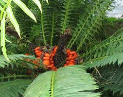

Zamiaceae
Cycad Family
Zamiaceae is the largest family of cycads, an ancient group of seed-bearing gymnosperms distinct from flowering plants. Members are typically palm-like or fern-like perennials with stout, often subterranean trunks and large, pinnately compound leaves forming a crown. They are dioecious, producing large, separate male (pollen) and female (seed) cones (strobili). Found in tropical and subtropical regions worldwide, many species are highly toxic.
Overview
The Zamiaceae family encompasses the majority of living cycad diversity, with about 9-10 genera and over 200 species. These "living fossils" represent a lineage that flourished during the Mesozoic Era (the "Age of Cycads"). They are found across tropical and subtropical regions of Africa, Australia, North and South America. Genera include well-known cycads like Zamia, Dioon, Encephalartos, and Macrozamia.
Zamiaceae typically inhabit diverse environments, from rainforest understories to dry scrublands and savannas. They are characterized by slow growth, longevity, and often possess specialized coralloid roots containing nitrogen-fixing cyanobacteria. All parts of the plant typically contain potent toxins, such as cycasin and BMAA, as a defense against herbivores.
Many cycads face significant conservation threats due to habitat destruction and over-collection for horticulture and traditional medicine. Their ancient lineage, unique biology (including motile sperm, a primitive trait), and often striking appearance make them subjects of considerable scientific and horticultural interest. Pollination is often specialized, involving beetles or thrips attracted to the cones.
Quick Facts
- Scientific Name: Zamiaceae
- Common Name: Cycad family
- Number of Genera: Approximately 9-10
- Number of Species: Approximately 200-230
- Distribution: Tropical and subtropical regions of Africa, Australia, North & South America.
- Evolutionary Group: Gymnosperms - Cycads - Order Cycadales
Key Characteristics
Growth Form and Habit
Perennial, long-lived gymnosperms with diverse habits. Many have stout, woody, often unbranched trunks (pachycaulous stems) that can be subterranean (forming a caudex) or aerial and palm-like. Some species branch dichotomously. Possess specialized upward-growing, branched coralloid roots near the soil surface containing symbiotic nitrogen-fixing cyanobacteria.
Leaves
Leaves are large, typically pinnately compound (rarely bipinnate in Bowenia), and spirally arranged in a terminal crown. Leaflets (pinnae) are often leathery or stiff, with entire, toothed, or spiny margins. Venation is typically parallel or dichotomously branched, lacking a distinct central midrib (except in the genus Stangeria, which has a midrib and resembles a fern). Young leaves often exhibit circinate vernation (coiled like a fern fiddlehead).
Reproductive Structures (Strobili/Cones)
Plants are strictly dioecious (separate male and female individuals). Reproductive structures are large, typically woody cones (strobili), usually borne singly or in groups at the apex of the stem, surrounded by the leaf crown.
- Male Cones (Microsporangiate strobili): Composed of numerous, tightly packed, spirally arranged scales called microsporophylls. Each microsporophyll bears numerous pollen sacs (microsporangia) grouped in clusters (sori) on its lower (abaxial) surface. They produce large quantities of pollen.
- Female Cones (Megasporangiate strobili): Usually larger and woodier than male cones. Composed of numerous, tightly packed, spirally arranged scales called megasporophylls. Unlike the leaf-like megasporophylls of Cycadaceae, these are typically peltate (shield-shaped) or thickened structures. Each megasporophyll usually bears two large ovules (sometimes more) on its inner (adaxial) surface. Ovules are exposed, characteristic of gymnosperms.
Pollination and Seeds
Pollination was traditionally thought to be by wind, but specialized insect pollination (often by beetles or thrips attracted by heat or scent produced by the cones) is now known to be common or predominant in many species. Fertilization involves motile, flagellated sperm (an ancient trait shared with Ginkgo), which swim a short distance within the ovule to reach the egg cell.
Seeds are typically large, often brightly colored (red, orange, yellow), consisting of an embryo, nutritive tissue derived from the female gametophyte, and covered by seed coats including a fleshy outer layer (sarcotesta) and a hard inner layer (sclerotesta). The fleshy sarcotesta often attracts animals (birds, mammals) that act as dispersal agents.
Chemical Characteristics
Nearly all parts of Zamiaceae plants contain potent toxins, including azoxyglycosides (like cycasin) and neurotoxic amino acids (like BMAA). These compounds serve as powerful defenses against herbivores but make the plants dangerous if ingested without proper traditional detoxification methods (used by some indigenous cultures for starch extraction).
Field Identification
Identifying Zamiaceae involves recognizing their cycad characteristics (gymnosperm, compound leaves, cones) and distinguishing them from palms, ferns, and the other cycad family, Cycadaceae.
Primary Identification Features
- Habit: Gymnosperm with palm-like or fern-like appearance; stout trunk (aerial or subterranean).
- Leaves: Large, pinnately compound (rarely bipinnate), spirally arranged in a terminal crown.
- Leaflets (Pinnae): Usually lack a prominent central midrib (veins parallel or dichotomous); margins entire, toothed, or spiny. (Exception: Stangeria has a midrib).
- Reproductive Structures: Large, woody male or female cones (strobili) borne centrally.
- Megasporophylls: Scale-like, peltate or thickened, tightly packed in female cones (unlike leaf-like megasporophylls of *Cycas*).
- Toxicity: All parts generally considered highly toxic.
Secondary Identification Features
- Circinate Vernation: Young emerging leaves often coiled like fern fiddleheads.
- Coralloid Roots: Specialized roots near the soil surface containing cyanobacteria (may be visible).
- Trunk Armor: Often covered in persistent leaf bases.
Seasonal Identification Tips
- Year-round: Evergreen leaves and trunk form allow identification anytime.
- Cone Production: Cones are produced periodically (not necessarily annually) and can persist for many months, allowing identification of sex and family.
Common Confusion Points
Zamiaceae can be confused with several other plant groups:
- Palms (Arecaceae): Palms are monocot angiosperms. They have flowers and fruits, not cones. Palm leaves can be pinnately or palmately compound but have different structural details and venation.
- Tree Ferns (e.g., Cyatheaceae, Dicksoniaceae): Tree ferns have large compound leaves (fronds) and often thick trunks, but they are true ferns reproducing via spores produced in sori on the underside of fronds, not seeds produced in cones.
- Cycadaceae (Cycas genus): The only other cycad family. Distinguished from Zamiaceae because Cycas leaflets have a prominent central midrib but lack lateral veins, and female Cycas plants produce leaf-like megasporophylls bearing ovules along their margins, which are loosely clustered but do not form a compact cone.
The presence of true cones and pinnately compound leaves without a single midrib (usually) distinguishes Zamiaceae from palms and ferns. The compact female cone structure distinguishes it from Cycadaceae.
Field Guide Quick Reference
Look For:
- Palm/fern-like gymnosperm
- Stout trunk (aerial or underground)
- Large, pinnately compound leaves in crown
- Leaflets usually lacking midrib (veins parallel/forked)
- Large central cones (male or female)
- Female cones compact, scales not leaf-like
- Tropical/subtropical regions
Key Variations:
- Trunk habit (tall vs. subterranean)
- Leaflet shape and armature (spines/teeth)
- Cone size, shape, and color
- Genus-specific features
Notable Examples
Includes diverse genera found across the tropics and subtropics.

Zamia spp.
Coontie, Cardboard Palm (misnomer)
The largest genus (~70-80 species), found in the Americas (from Florida/Georgia, USA, through Central America and the Caribbean to South America). Typically have subterranean or short aerial trunks and pinnate leaves with articulated (jointed) leaflets that lack a midrib. Includes the only cycad native to the continental USA (Z. integrifolia).

Dioon spp.
Chestnut Dioon, Gum Palm
A genus (~10-15 species) native to Mexico and Central America. Often develop robust aerial trunks and stiff, pinnate leaves with numerous leaflets, often armed with marginal spines. Cones can be very large. Some species are popular ornamental cycads.

Encephalartos spp.
Bread Palms
A large genus (~65 species) endemic to Africa. Highly diverse, ranging from species with subterranean stems to massive tree-like forms. Leaves are pinnate, often very stiff and spiny. Many species are highly sought after by collectors and face severe conservation threats. Cones are often large and colorful.

Macrozamia spp.
Burrawang
A genus (~40 species) endemic to Australia. Habits range from subterranean stems to tall trunks. Leaves are pinnate, leaflets lack a midrib. Cones can be very large. Important plants in Australian ecosystems and for indigenous cultures (requiring careful detoxification for food use).
Phylogeny and Classification
Zamiaceae belongs to the order Cycadales, one of the four extant orders of gymnosperms (seed plants with exposed ovules, lacking flowers and fruits). Cycads represent an ancient lineage, with fossils dating back to the Paleozoic Era, and they were particularly abundant during the Mesozoic Era.
The order Cycadales contains only two living families: Zamiaceae and Cycadaceae (which contains only the genus Cycas). These two families represent the entirety of modern cycad diversity. Molecular and morphological data confirm that Cycadales is a monophyletic group, distinct from other gymnosperm lineages like conifers, Ginkgo, and gnetophytes. The exact evolutionary relationships between the four gymnosperm orders remain an area of active research.
Position in Plant Phylogeny
- Kingdom: Plantae
- Clade: Tracheophytes (Vascular plants)
- Clade: Spermatophytes (Seed plants)
- Clade: Gymnosperms
- Clade: Cycads
- Order: Cycadales
- Family: Zamiaceae
Evolutionary Significance
Zamiaceae and cycads in general hold immense evolutionary significance:
- Living Fossils: Represent a lineage that originated hundreds of millions of years ago, providing a window into past ecosystems and early seed plant evolution.
- Primitive Traits: Retain ancient characteristics like motile sperm (flagellated spermatozoids), large ovules, and slow growth.
- Gymnosperm Diversity: Showcase a unique branch of gymnosperm evolution distinct from conifers and other groups.
- Coevolution: Exhibit specialized relationships with pollinators (often beetles or thrips) and dispersal agents.
- Symbiosis: Possess coralloid roots with nitrogen-fixing cyanobacteria, important in nutrient-poor soils.
- Chemical Defenses: Production of potent toxins highlights evolutionary arms races with herbivores.
- Conservation Biology: Many species are threatened, making them important subjects for conservation genetics and management.